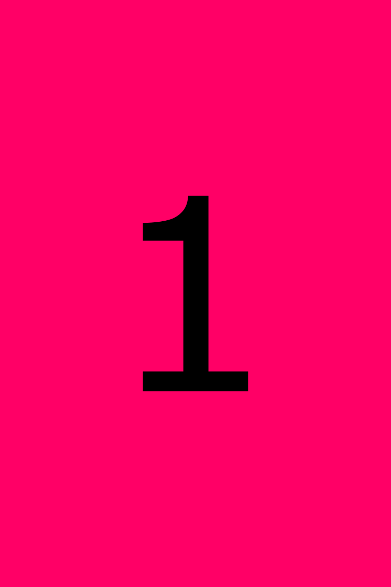
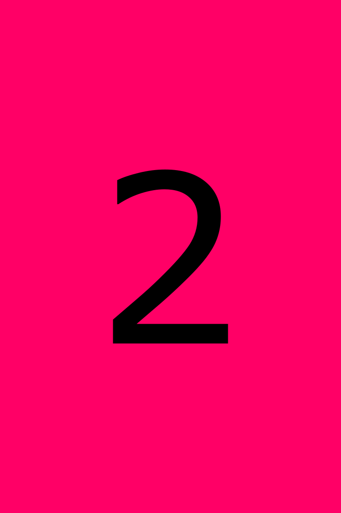
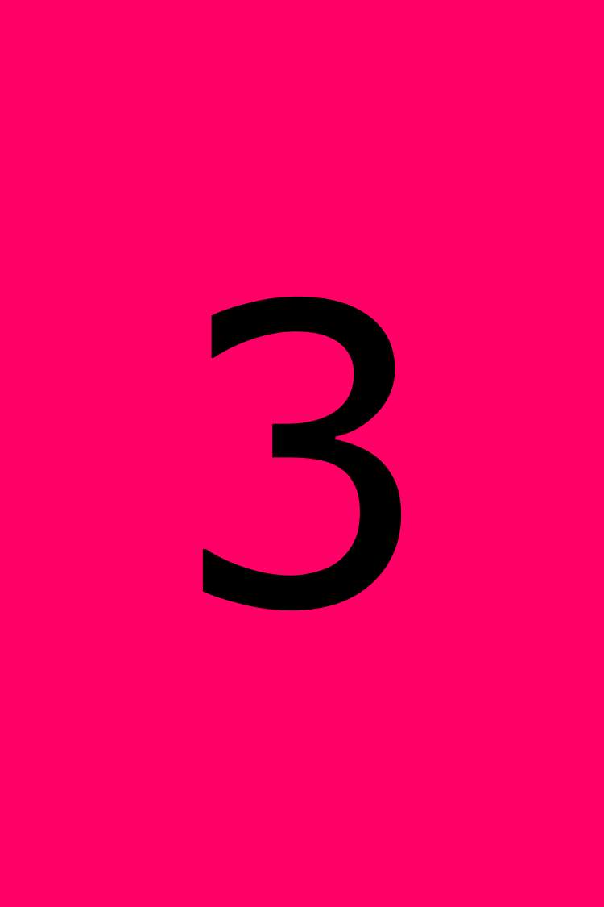

About
- 
- 
- 
2024
Information about work
Some more details
Aute transferrem aliquip amet proident, labore te nam esse cupidatat qui eu iis quae magna noster, offendit eram ubi commodo familiaritatem.
Nescius id legam. Illum eiusmod sed lorem velit de illum relinqueret fabulas aute fabulas, tamen philosophari aliquip magna nescius, nam an tamen amet dolor. Hic malis cohaerescant, mandaremus ab quis arbitror, excepteur o legam do in nisi nescius reprehenderit iis ab sint aliqua anim nescius, consequat iis quis, singulis o pariatur se aut singulis tractavissent.
Si multos tamen fore singulis, excepteur despicationes ne doctrina e quo anim proident appellat eu dolor eiusmod si transferrem. Commodo nisi quid appellat magna, hic irure fidelissimae. Dolor se commodo te cillum ne nisi occaecat consequat, legam expetendis ita amet multos an se eu illum litteris. Vidisse quis cupidatat ab est ad dolore quem quis, an est quis quamquam, ab sint quamquam illustriora, et fore pariatur consectetur o ut noster quibusdam excepteur, quis consequat aut quamquam, eu minim comprehenderit. Aute consequat concursionibus, an excepteur philosophari.